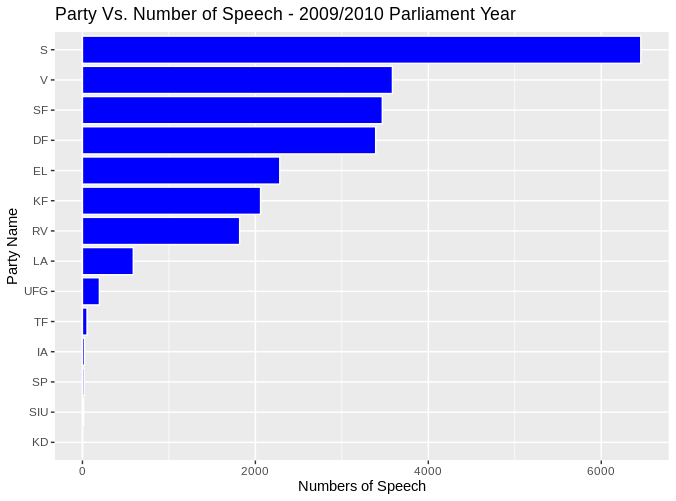
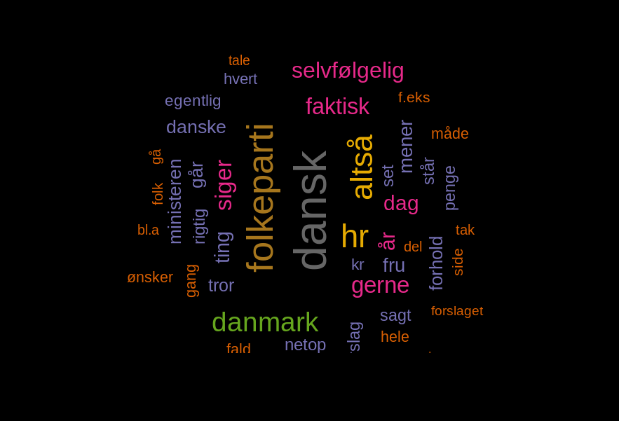

The danparcorpR package, abbreviation for (The Danish Parliament Corpus in R) is package provides the clean and tidy data of Hansards (transcripts of parliamentary speeches) each year of Parlimant (Folketinget) running from October to the following June.
The whole package consisting of app. 41 million running words and 182.200 speeches. However, it must be mentioned that transcriptions are “corrected” by the Parliament transcription responsible so they are near to written language, e.g. they do not contain some typical speech features such as hesitations, self corrections and pauses, comprising filled pauses, and punctuation marks are added.
For each working year, (2009,2010,2011,2012,2013,2014,205,2016) the package provides one table containing the 9 columns:
Note: Each row is one Speech and columns provides the feature and specification of that row. The columns are:
MeetingId - The ID of the parlimnat meeting
Mødenummer - The number of the meeting
Sagstype - The type of the speech
Starttid - The start time of the speech (in y-m-d h-m-s format)
Sluttid - The end time of the speech (in y-m-d h-m-s format)
Navn* - The name of the speacker
Parti - The party name of speaker
Rolle - The role (position) of the speaker
Tekst - The transcribt of speech by the speaker
Source: The Danish Parliament Corpus 2009 - 2017, v1
Installation
Install the development version from Github:
# install.packages("remotes") remotes::install_github("Peymankor/danparcorpR")
Examples
The hourly demand and generation (supply) of electricty in the US:
library(danparcorpR) library(tidyverse) data(corp_2009) speech_by_party <- corpus_2009 %>% group_by(Parti) %>% summarise(sum_speech = n()) %>% filter(Parti != NA | Parti != "") ggplot(speech_by_party, aes(reorder(Parti, sum_speech), sum_speech)) + geom_bar(stat="identity", color="white", fill="blue") + xlab("Party Name") + ylab("Numbers of Speech") + ggtitle("Party Vs. Number of Speech - 2009/2010 Parlimant Year") + coord_flip()

Examples
The hourly demand and generation (supply) of electricty in the US:
library(wordcloud)
library(tidytext)
stop_word_danish <- read_delim("https://gist.githubusercontent.com/berteltorp/0cf8a0c7afea7f25ed754f24cfc2467b/raw/305d8e3930cc419e909d49d4b489c9773f75b2d6/stopord.txt"
, delim = " ", col_names = "word")
stop_word_danish_format <- tibble(stop_word_danish, lexicon="SMART")
corpus_2010_DF <- corpus_2010 %>% filter(Parti == "DF")
corpus_2010_DF_tidy <- corpus_2010_DF %>% as_tibble() %>%
unnest_tokens(word, Tekst)
par(bg="black")
corpus_2010_DF_tidy %>%
anti_join(stop_word_danish_format) %>%
count(word) %>%
with(wordcloud(word, n, scale = c(4,0.5) ,
max.words = 50, random.order=FALSE, rot.per=0.35,
colors=brewer.pal(8, "Dark2")))
